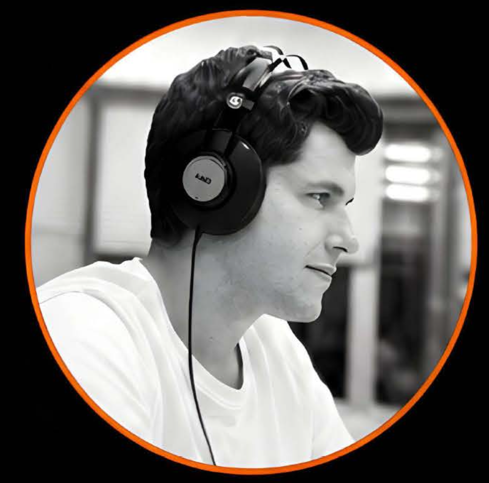
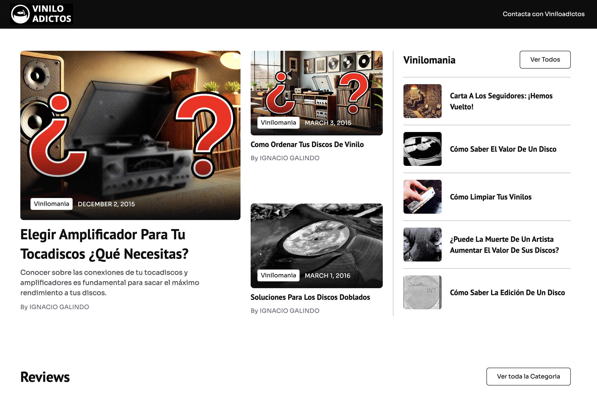
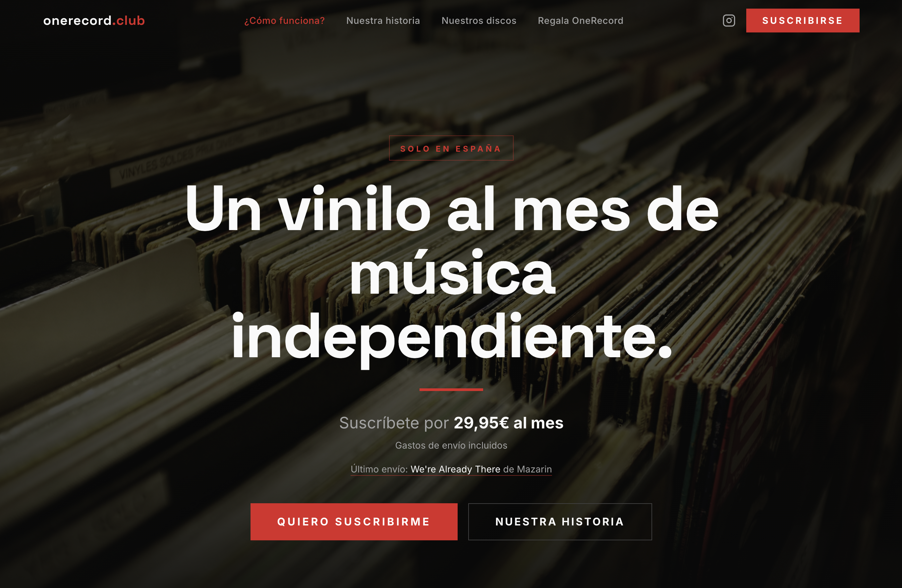
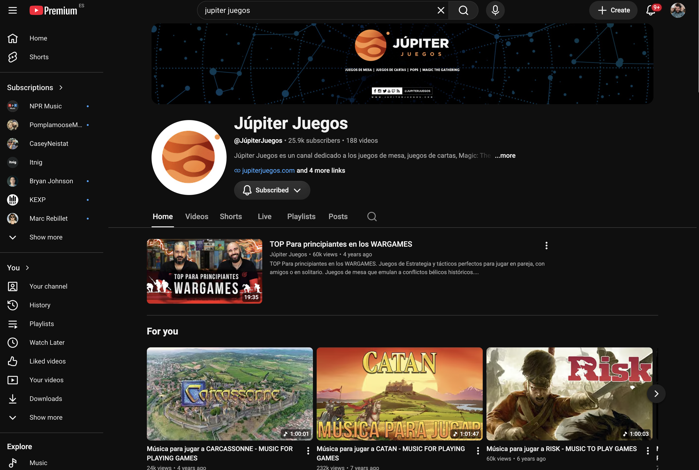

Editor de vídeo y realizador audiovisual
15 años montando televisión en directo, deportes y contenido digital. Ahora mismo: MotoGP en Atresmedia Deportes y El Chiringuito de Jugones.

01 / TRAYECTORIA
Editor de vídeo · Atresmedia Deportes
Edición de reportajes para los programas del Mundial de MotoGP. Vídeos musicales y cabeceras: piezas que abren programa y marcan el ritmo.
Montador y ayudante de realización · Atresmedia (Mega)
Montaje en Avid Media Composer en un directo diario. Operador de Vizrt Trio, gestión de envíos internacionales y coordinación con realización y redacción con el programa en el aire.
Montador y creador de contenido
Montaje en Premiere Pro y postproducción en After Effects para la network. Gestión de canales de YouTube y contenido para redes.
Montador, cámara y redactor
Tecnomedia, Ondachiclana y Diario de Cádiz: montaje de programas e informativos, cámara ENG y realizaciones en directo. Donde aprendí a hacerlo todo.
01.B / FORMACIÓN ACADÉMICA
EAE Business School
Facultad de Comunicación · Universidad de Sevilla
CICLO GRAN · Jerez de la Frontera
Fundación Audiovisual de Andalucía
400 horas, presencial.
Escuela de Cine de Puerto Real
Cortometraje en 35 milímetros.
Fundación Audiovisual de Andalucía
02 / ESPECIALIDADES
Reportajes, cabeceras y vídeos musicales con narrativa y ritmo propios.
Directos diarios: decisiones en segundos con el programa en emisión.
Etalonaje y acabado para que cada pieza salga a antena impecable.
Gestión de señales y materiales entre cadenas y territorios, sin margen de error.
Herramientas de IA integradas en el flujo de edición y postproducción.
SOFTWARE
● uso diario en plató
03 / FUERA DE ONDA
Cuando apago el Avid sigo dándole a la manivela: vinilos, un club de discos y una mesa llena de juegos.

Portal sobre la cultura del vinilo: novedades, ediciones y todo lo que gira a 33 rpm.
viniloadictos.com →
Producción audiovisual para el club de suscripción de vinilos: piezas de vídeo, contenido para redes y presentación de cada disco del mes.
onerecord.club →
Canal de YouTube sobre juegos de mesa: reseñas, gameplays y producción íntegra del contenido, de la cámara al montaje.
Ver el canal →